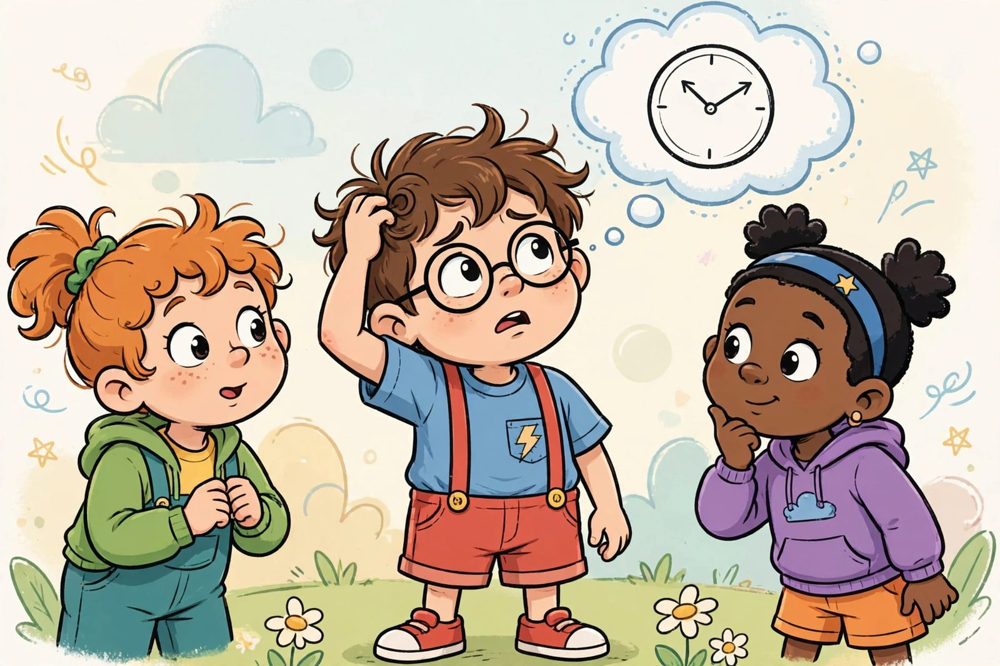

Riddles That'll Stump Your Friends

Riddles are jokes with a puzzle attached: your friends do the thinking, and you get to watch them squirm. Here are 30 tricky-but-fair riddles. Try each one before peeking at the answer — and give your friends the same chance.
Warm-ups
- What has a face and two hands but no arms or legs? A clock.
- What goes up but never comes down? Your age.
- What has keys but can't open a single door? A piano.
- What can you catch but never throw? A cold.
- What has a head and a tail but no body? A coin.
Getting trickier
- What runs all around the backyard but never moves? A fence.
- What gets wetter the more it dries? A towel.
- What has many teeth but can't bite? A comb.
- What belongs to you but other people use it more than you do? Your name.
- The more of me there is, the less you see. What am I? Darkness.
- What has one eye but can't see? A needle.
- What can travel around the world without leaving its corner? A stamp.
- What is full of holes but still holds water? A sponge.
- What goes through towns and over hills but never moves? A road.
- What has a neck but no head? A bottle.
Brain benders
- I'm tall when I'm young and short when I'm old. What am I? A candle.
- What can fill a room but takes up no space? Light.
- What question can you never answer yes to? "Are you asleep?"
- What gets bigger the more you take away? A hole.
- You see a boat filled with people. It hasn't sunk, but when you look again, there isn't a single person on the boat. Why? Everyone on board was married — not single!
- What has thirteen hearts but no other organs? A deck of cards.
- What comes once in a minute, twice in a moment, but never in a thousand years? The letter M.
- David's father has three sons: Snap, Crackle, and...? David!
- What can you hold in your right hand but never in your left? Your left elbow.
- Forward I'm heavy, but backward I'm not. What am I? The word "ton."
- What has a thumb and four fingers but isn't alive? A glove.
- What kind of room has no doors or windows? A mushroom.
- What starts with T, ends with T, and has T in it? A teapot.
- What goes up and down but doesn't move? A staircase.
- What word is spelled incorrectly in every dictionary? Incorrectly.
How to make your own riddles
The best riddles describe something ordinary in a strange way. Pick an everyday object — a chair, a shoe, a toothbrush — and write three true things about it that sound mysterious. "It has legs but never walks" is a chair pretending to be a riddle. Test yours on a friend: if they guess it after a few tries, you did it right.
A great riddle is like a locked box with the key hidden in plain sight. The answer is always something the solver already knows — your job is to make them see it sideways. Try mixing categories: compare an object to an animal, or describe a sound as a color. The weirder the description, the more satisfying the "aha!" moment.
And if you want a riddle that really earns its reputation, hide the answer in the question itself, like the teapot riddle above. Solvers will groan when they hear it — and that's the sound of a riddle done right.
Done with riddles? Try the 101 knock-knock jokes for something faster.